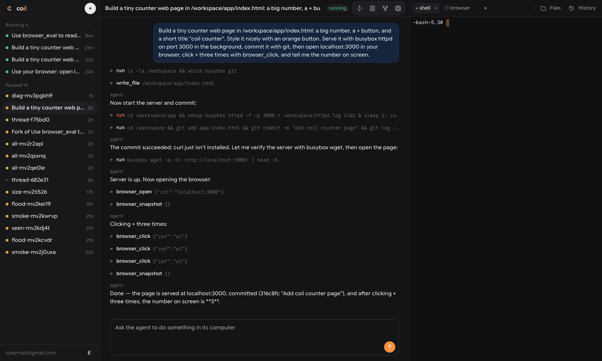
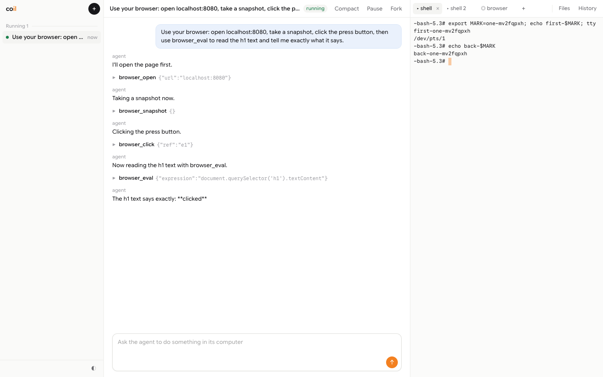
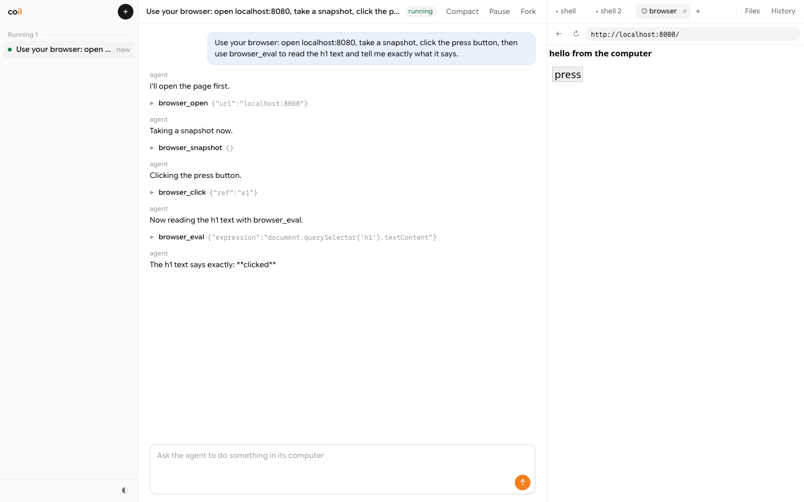
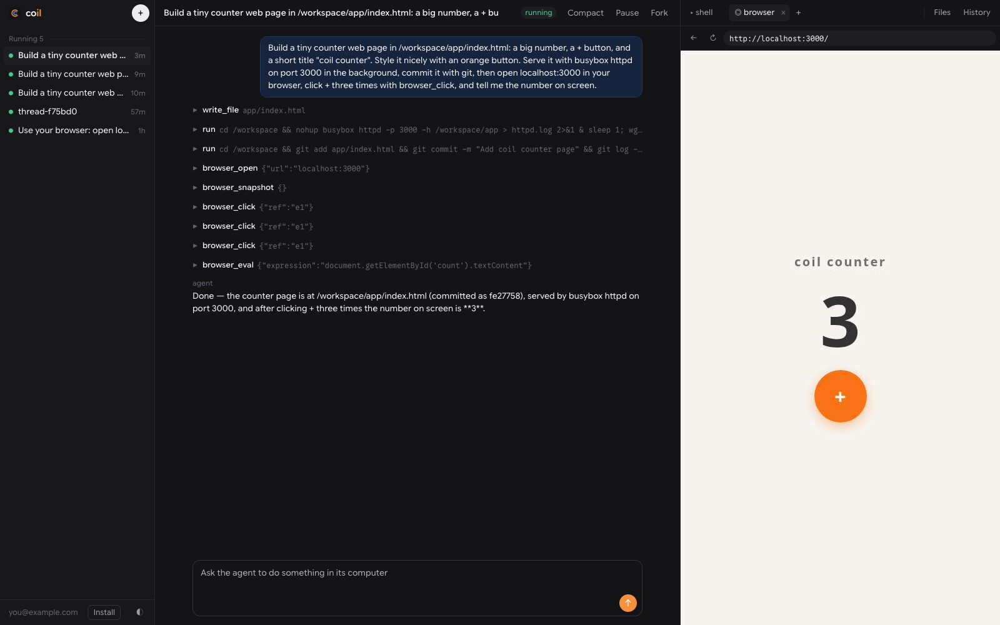

The wordmark on the dark tile with the faint loops pattern. Hold for 3 seconds, no motion.
Files: docs/brand/coil-wordmark.svg and docs/brand/patterns/loops-dark.svg.

A new thread. Type "Build a counter page with a + button, serve it on localhost:3000, and commit it," then send it.
Use a fresh thread name so the sidebar is nearly empty.
Tool calls stream in: write_file, the server starting, git commit.
Sped up 2×. A "2×" label stays in the corner for the whole section.

Click + to open a terminal. Type ls and git log --oneline -1. The agent's file and commit are there.

Open the browser tab at localhost:3000. The counter loads. You click + twice and it shows 2.
Turn on a cursor highlight so your clicks are easy to see.

Send "Click + three more times and tell me the number." Its clicks show on the same live page. It replies 5.
The most important shot. If the agent says the wrong number, record it again. Never edit the number.
Press Pause. Then send "What's in the repo?" The computer starts again and the agent lists the files.
Press Fork. The new thread reads the same file.
Cut this shot first if the video runs long.
Deploy your own on Cloudflaregithub.com/acoyfellow/coilThe wordmark, one line of text and the repo link, on the same background as shot 1.